← 返回阅读库 · 原论文目录
论文讲解阅读文档 · 论文精读 · v209
22位巨头重磅联名！当AI开始自我进化，我们的时间还剩多少？
视频时长 00:11:33；讲解文字 3,983 字符；提取讲解画面 220 张。按视频原顺序阅读，每段文字保留时间戳。
文字来自整段视频的自动语音转写，按自然停顿分段，并与 PPT / 论文页面 / 演示画面对齐。未将讲解压缩为摘要；术语、数字和口述公式请结合画面及原论文核对。 阅读稿已校正规范部分明确术语误识别；原始逐字稿和每处修改记录另行保留。
讲解画面为源视频截图（640×360），不是可编辑 PPT 文件。全片按每秒 2 帧扫描内容变化，逐步展开页保留；连续动画保留代表画面。清晰度受源视频限制。
下载完整资料包 · 含离线 HTML、PDF、Word、全部 PPT 画面和字幕。
原论文与材料
What if automating AI R&D triggers an intelligence explosion? · 下载完整 PDF（14 页）
按时间阅读
00:00:00–00:00:04 · 画面 001
00:00:00–00:00:04 · 画面 001Quizy 诺奖得主 Hinton 老爷子这次整了个大的。前几天他发推挂出新论文标题，直接是个问句：如果 AI 开始自己研发 AI，触发了智能爆炸，会怎样？更刺激的是署名男 22 个作者，Hinton 、Bengio 两位 AI 教父，强化学习主师爷巴托，外加 OpenAI 首席科学家 Anthropic 连创同学们细品，一群正把 AI 进化成现实的人联名问，真的成了怎么办
00:00:04–00:00:05 · 画面 002
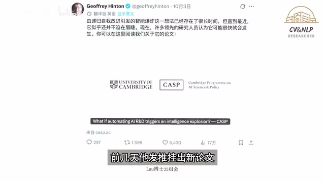
00:00:04–00:00:05 · 画面 00200:00:05–00:00:09 · 画面 003
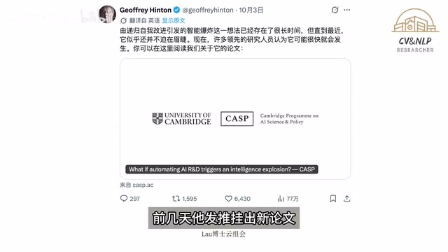
00:00:05–00:00:09 · 画面 00300:00:09–00:00:13 · 画面 004
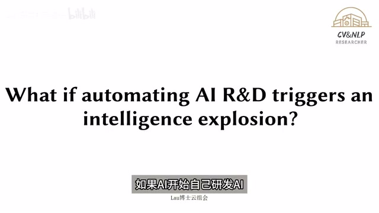
00:00:09–00:00:13 · 画面 00400:00:13–00:00:17 · 画面 005
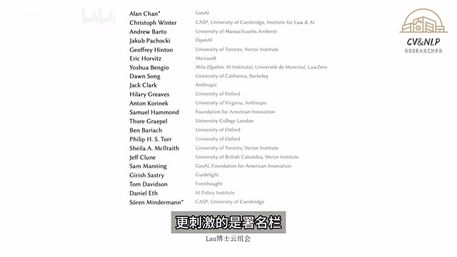
00:00:13–00:00:17 · 画面 00500:00:17–00:00:21 · 画面 006
00:00:17–00:00:21 · 画面 00600:00:21–00:00:24 · 画面 007
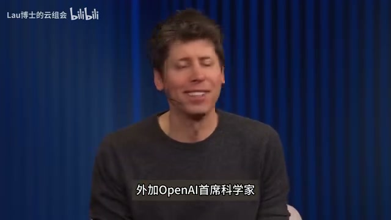
00:00:21–00:00:24 · 画面 00700:00:24–00:00:26 · 画面 008
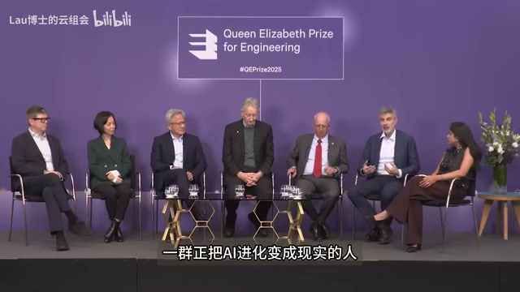
00:00:24–00:00:26 · 画面 00800:00:26–00:00:29 · 画面 009
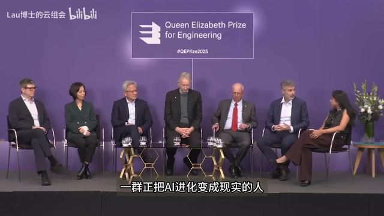
00:00:26–00:00:29 · 画面 00900:00:29–00:00:32 · 画面 010
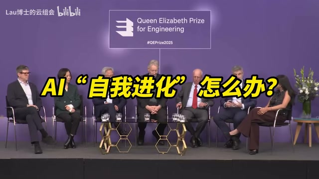
00:00:29–00:00:32 · 画面 010本期云组会六博士就和大家一起深挖这篇论文，看看大佬们到底在担忧什么。点赞投币我们一探究竟。智能爆炸这个词其实老掉牙了，1965 年数学家古德就写过，一旦机器比人更擅长设计机器，它就会设计出更聪明的自己，一轮一轮的滚下去，能力的增长反过来加速了能力的增长
00:00:32–00:00:36 · 画面 011
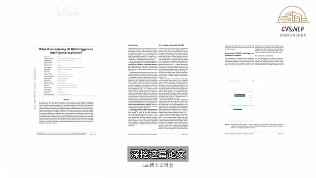
00:00:32–00:00:36 · 画面 01100:00:36–00:00:40 · 画面 012
00:00:36–00:00:40 · 画面 01200:00:40–00:00:44 · 画面 013
00:00:40–00:00:44 · 画面 01300:00:44–00:00:45 · 画面 014
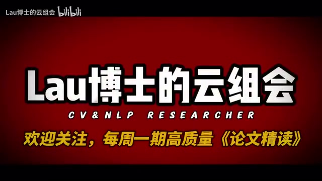
00:00:44–00:00:45 · 画面 01400:00:45–00:00:48 · 画面 015
00:00:45–00:00:48 · 画面 01500:00:48–00:00:52 · 画面 016
00:00:48–00:00:52 · 画面 01600:00:52–00:00:53 · 画面 017
00:00:52–00:00:53 · 画面 01700:00:53–00:00:56 · 画面 018
00:00:53–00:00:56 · 画面 01800:00:56–00:00:58 · 画面 019
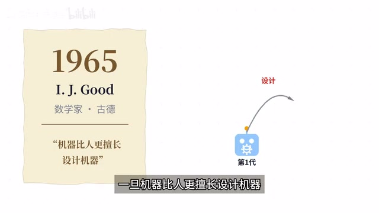
00:00:56–00:00:58 · 画面 01900:00:58–00:01:02 · 画面 020
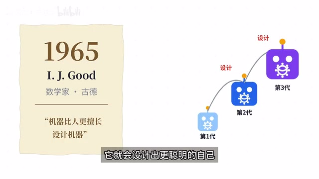
00:00:58–00:01:02 · 画面 02000:01:02–00:01:06 · 画面 021
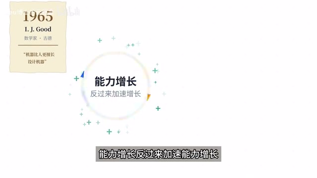
00:01:02–00:01:06 · 画面 021这篇论文就是把这个古早的命题翻译成了实际的工程问题。论文提到递归自我改进，根本不需要 AI 先变成什么超级智能，它只需要 AI 完整的接管一条流水线
00:01:06–00:01:10 · 画面 022
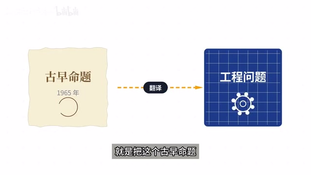
00:01:06–00:01:10 · 画面 02200:01:10–00:01:13 · 画面 023
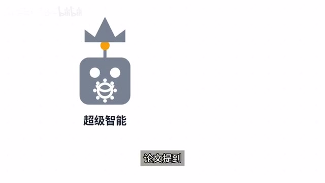
00:01:10–00:01:13 · 画面 02300:01:13–00:01:17 · 画面 024
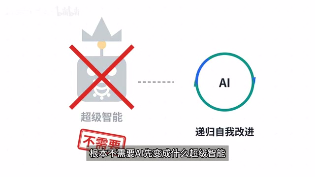
00:01:13–00:01:17 · 画面 02400:01:17–00:01:19 · 画面 025
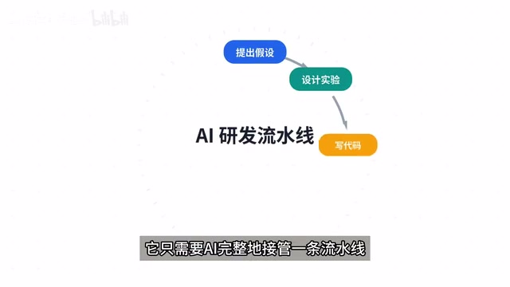
00:01:17–00:01:19 · 画面 02500:01:19–00:01:23 · 画面 026
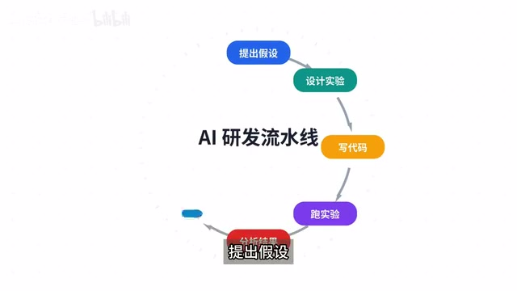
00:01:19–00:01:23 · 画面 026提出假设，设计实验，写代码跑实验，分析结果，定位错误，调整路线，再来一轮，这条链条一旦闭环，每一代的 AI 都会扩大研发的劳动力，更大的劳动力再造出更强的 AI。作者管这叫软件驱动的智能爆炸
00:01:23–00:01:27 · 画面 027
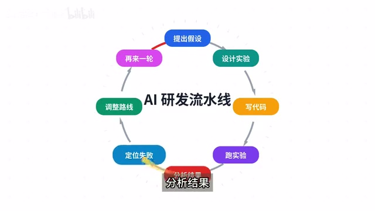
00:01:23–00:01:27 · 画面 02700:01:27–00:01:31 · 画面 028
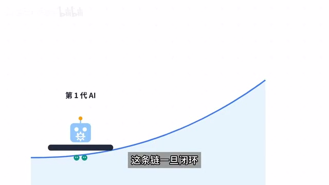
00:01:27–00:01:31 · 画面 02800:01:31–00:01:33 · 画面 029
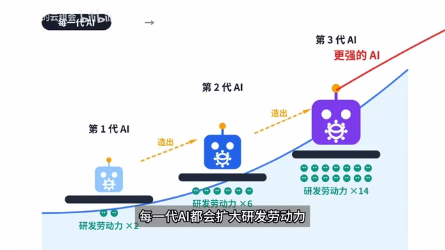
00:01:31–00:01:33 · 画面 02900:01:33–00:01:37 · 画面 030
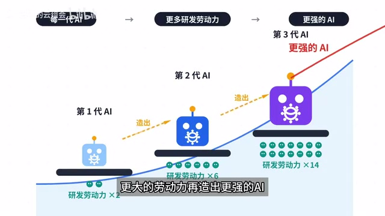
00:01:33–00:01:37 · 画面 03000:01:37–00:01:38 · 画面 031
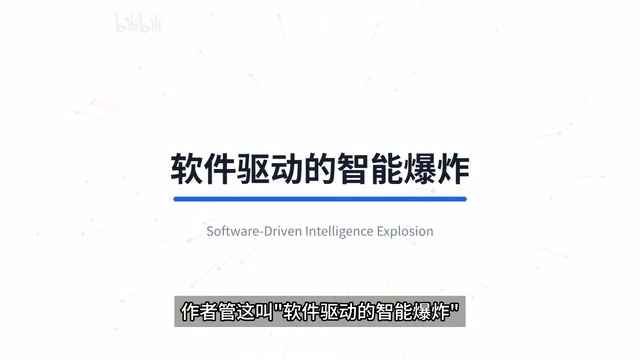
00:01:37–00:01:38 · 画面 031由论文的图二所示，即 AI 越擅长搞 AI 研发，就相当于多出更多的研发人员，这些 AI 的研究员又造出更强的 AI，如此循环，研发的队伍越来越大。利尔博士我在今年 2 月份就做了一期关于 AI 自动科研的视频，AI 已经慢慢从解题者进化为了问题的提出者，实现了自我改进的初步闭环，所以我个人预测 AI 所带来的智能爆炸很快就会发生
00:01:38–00:01:51 · 画面 032
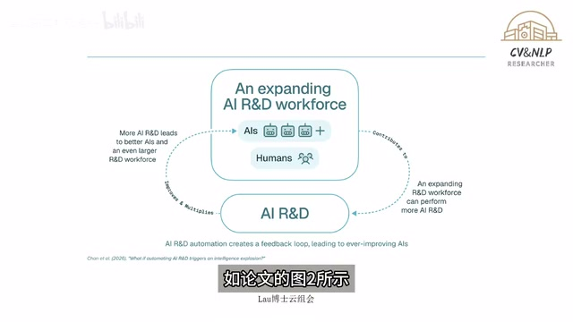
00:01:38–00:01:51 · 画面 03200:01:51–00:01:53 · 画面 033
00:01:51–00:01:53 · 画面 03300:01:53–00:01:57 · 画面 034
00:01:53–00:01:57 · 画面 03400:01:57–00:02:01 · 画面 035
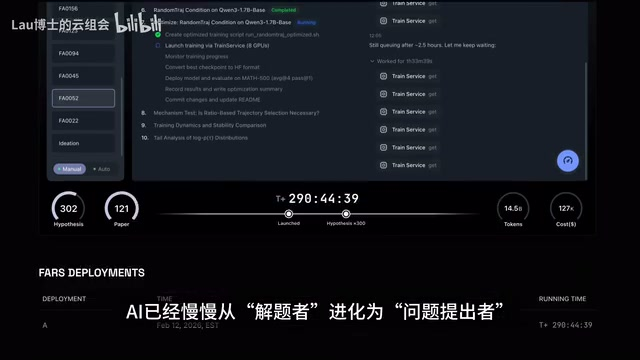
00:01:57–00:02:01 · 画面 03500:02:01–00:02:05 · 画面 036
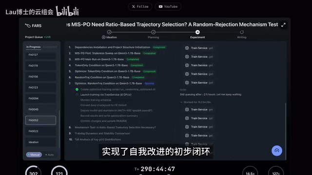
00:02:01–00:02:05 · 画面 03600:02:05–00:02:09 · 画面 037
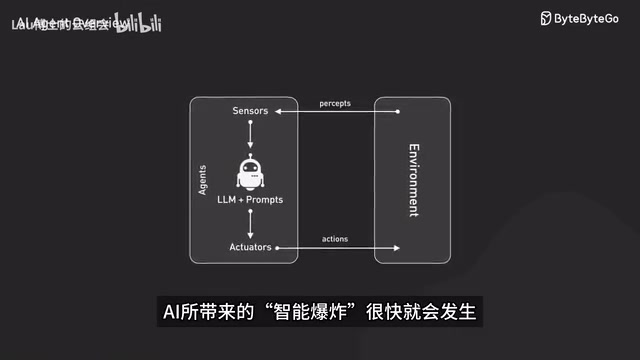
00:02:05–00:02:09 · 画面 037而且速度会远超我们的想象就像之前放言 AI 不可能对最尖端的数学家有任何影响的邱成桐就在最新的论文的致谢里也感谢了 GPT-6 Astra 和 Claude 那么为什么强调的是软件驱动的智能爆炸呢?这个强调其实非常关键依照芯片、设计、流片、建厂三年起步反馈的周期按年算而算法的改进、训练方法 A 准的工作流一旦验证有效
00:02:09–00:02:10 · 画面 038
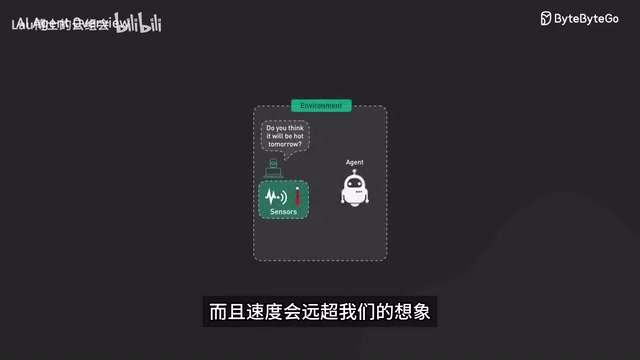
00:02:09–00:02:10 · 画面 03800:02:10–00:02:11 · 画面 039
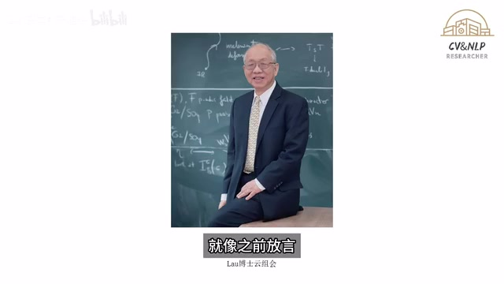
00:02:10–00:02:11 · 画面 03900:02:11–00:02:15 · 画面 040
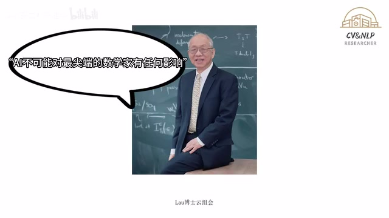
00:02:11–00:02:15 · 画面 04000:02:15–00:02:19 · 画面 041
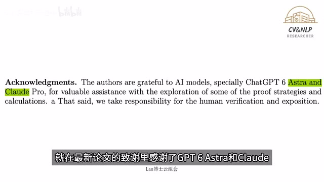
00:02:15–00:02:19 · 画面 04100:02:19–00:02:23 · 画面 042
00:02:19–00:02:23 · 画面 04200:02:23–00:02:27 · 画面 043
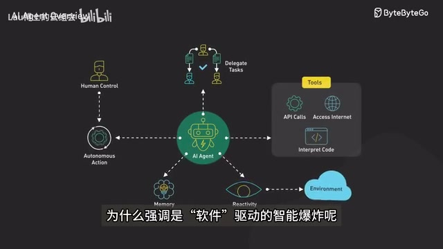
00:02:23–00:02:27 · 画面 04300:02:27–00:02:31 · 画面 044
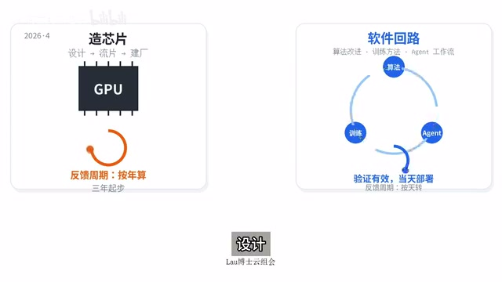
00:02:27–00:02:31 · 画面 04400:02:31–00:02:35 · 画面 045
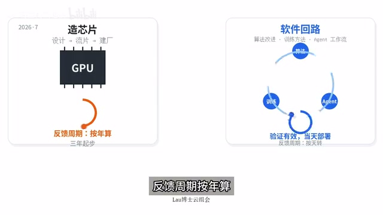
00:02:31–00:02:35 · 画面 04500:02:35–00:02:39 · 画面 046
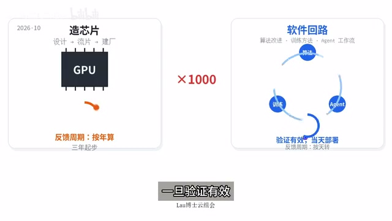
00:02:35–00:02:39 · 画面 046当天就能部署回研发流程软件的回路是按天赚的所以看到这里不知道同学 get 到没有大佬们真正关心的不是 AI 会不会突然觉醒而是一个更朴素的问题 AI 进步的反馈周期会不会短到人类根本来不及反应呢?
00:02:39–00:02:43 · 画面 047
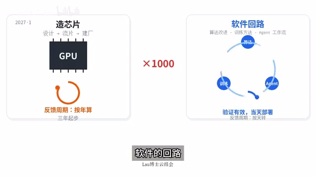
00:02:39–00:02:43 · 画面 04700:02:43–00:02:47 · 画面 048
00:02:43–00:02:47 · 画面 04800:02:47–00:02:51 · 画面 049
00:02:47–00:02:51 · 画面 04900:02:51–00:02:55 · 画面 050
00:02:51–00:02:55 · 画面 05000:02:55–00:02:59 · 画面 051
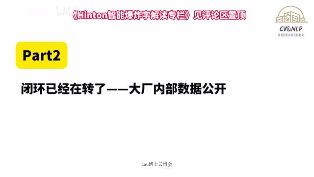
00:02:55–00:02:59 · 画面 051接下来我们上数据，全是头部大厂一手的内部数字，我们一个一个看。第一组数据来自 Anthropic ，AI 生成并且获批的代码占比呢，2025 年 1 月还是低个位数，到 2026 年 5 月超过 80%写代码的这个环节基本已经被拿下了。更狠的是第二个数，只需要了高层人类监督，由 AI 自主完成的科研工作占比
00:02:59–00:03:01 · 画面 052
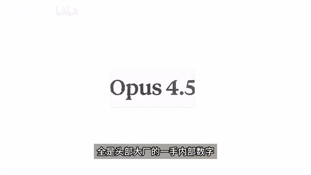
00:02:59–00:03:01 · 画面 05200:03:01–00:03:02 · 画面 053
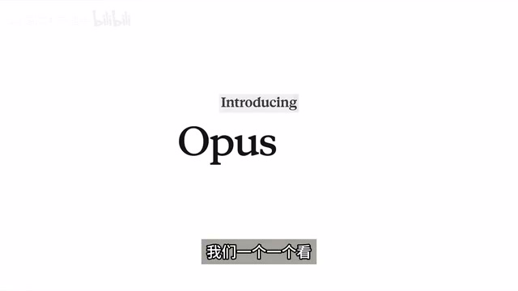
00:03:01–00:03:02 · 画面 05300:03:02–00:03:06 · 画面 054
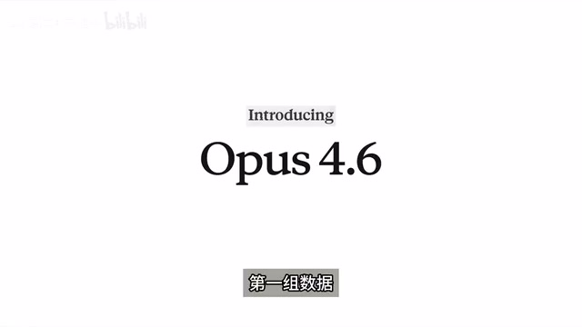
00:03:02–00:03:06 · 画面 05400:03:06–00:03:10 · 画面 055
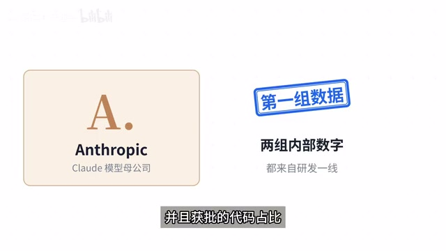
00:03:06–00:03:10 · 画面 05500:03:10–00:03:14 · 画面 056
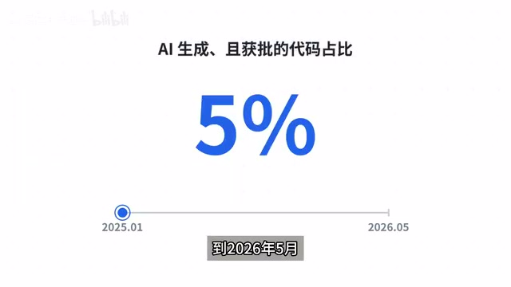
00:03:10–00:03:14 · 画面 05600:03:14–00:03:16 · 画面 057
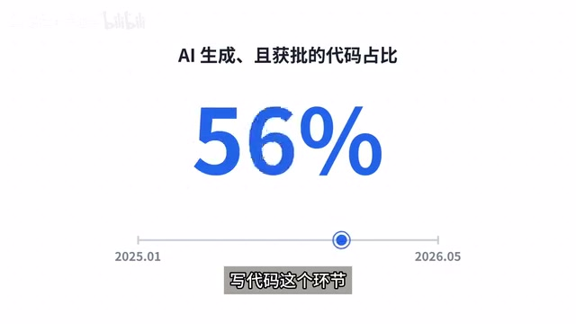
00:03:14–00:03:16 · 画面 05700:03:16–00:03:20 · 画面 058
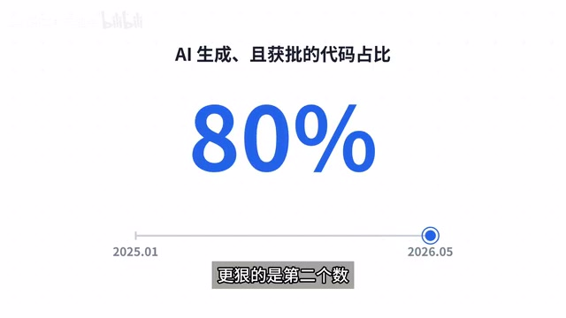
00:03:16–00:03:20 · 画面 05800:03:20–00:03:24 · 画面 059
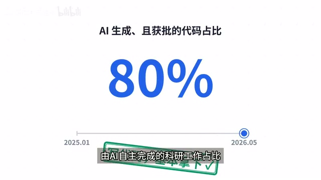
00:03:20–00:03:24 · 画面 0592026 年 3 月是 1%同年 8 月 26%5 个月 26 倍。当然得说明白，这不等于 Claude 已经承包了全公司 1⁴的科研，他衡量的是在高层监督下能自主扛走的研发环节，但这个增长率已经足够夸张了。第二组 METR 的时间地平线，AI 能独立完成的任务长度呢，早期大概每 7 个月翻 1 倍，2024 年之后加速到约 3 个月翻 1 倍
00:03:24–00:03:28 · 画面 060
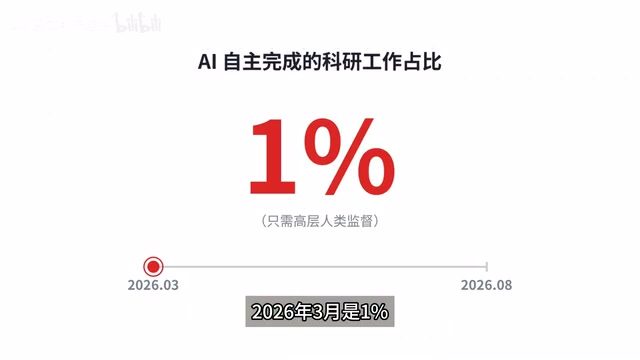
00:03:24–00:03:28 · 画面 06000:03:28–00:03:30 · 画面 061
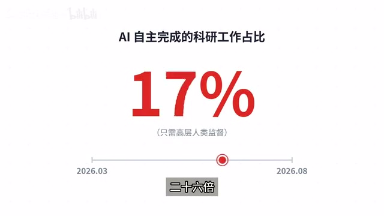
00:03:28–00:03:30 · 画面 06100:03:30–00:03:34 · 画面 062
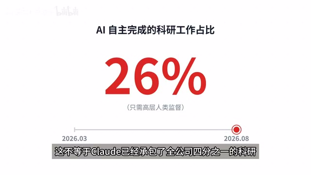
00:03:30–00:03:34 · 画面 06200:03:34–00:03:38 · 画面 063
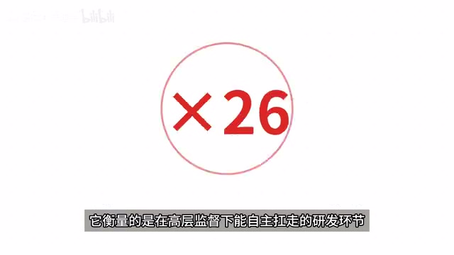
00:03:34–00:03:38 · 画面 06300:03:38–00:03:39 · 画面 064
00:03:38–00:03:39 · 画面 06400:03:39–00:03:40 · 画面 065
00:03:39–00:03:40 · 画面 06500:03:40–00:03:43 · 画面 066
00:03:40–00:03:43 · 画面 06600:03:43–00:03:46 · 画面 067
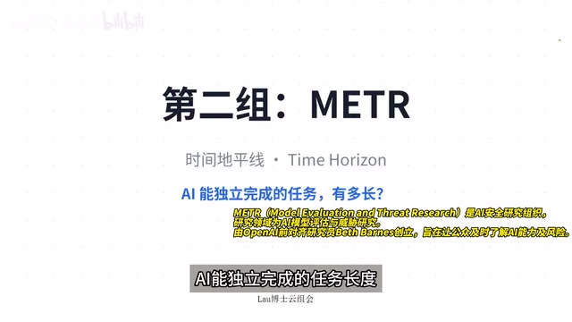
00:03:43–00:03:46 · 画面 06700:03:46–00:03:47 · 画面 068
00:03:46–00:03:47 · 画面 06800:03:47–00:03:51 · 画面 069
00:03:47–00:03:51 · 画面 06900:03:51–00:03:55 · 画面 070
00:03:51–00:03:55 · 画面 070照这个趋势外推到 2028 年年中，AI 将能独立完成需要人类专家几个月才能做完的任务，而这恰好覆盖了大多数 AI 研发项目的周期。第三组是论文补充材料里我个人最喜欢的一笔账，仅 OpenAI 一家的推理算力每天能生成 10 的 13 次方个 Token
00:03:55–00:03:57 · 画面 071
00:03:55–00:03:57 · 画面 07100:03:57–00:03:59 · 画面 072
00:03:57–00:03:59 · 画面 07200:03:59–00:04:00 · 画面 073
00:03:59–00:04:00 · 画面 07300:04:00–00:04:02 · 画面 074
00:04:00–00:04:02 · 画面 07400:04:02–00:04:03 · 画面 075
00:04:02–00:04:03 · 画面 07500:04:03–00:04:04 · 画面 076
00:04:03–00:04:04 · 画面 07600:04:04–00:04:08 · 画面 077
00:04:04–00:04:08 · 画面 07700:04:08–00:04:12 · 画面 078
00:04:08–00:04:12 · 画面 07800:04:12–00:04:16 · 画面 079
00:04:12–00:04:16 · 画面 079除以一个研究员一天的工作量折出来是多少呢？大约是 2000 万名研究员。就算留足一个数量级的误差，下线也是 200 万，而今天一家前沿实验室的人类研究团队最多也就是几千人
00:04:16–00:04:18 · 画面 080
00:04:16–00:04:18 · 画面 08000:04:18–00:04:20 · 画面 081
00:04:18–00:04:20 · 画面 08100:04:20–00:04:24 · 画面 082
00:04:20–00:04:24 · 画面 08200:04:24–00:04:25 · 画面 083
00:04:24–00:04:25 · 画面 08300:04:25–00:04:30 · 画面 084
00:04:25–00:04:30 · 画面 08400:04:30–00:04:32 · 画面 085
00:04:30–00:04:32 · 画面 085好 ，这里我们放慢节奏一起思考一下，人多就等于快吗？实际上 100 万个 AI 研究员并不会带来 1000 倍的速度，因为科研天然有边际收益的递减，10 个人研究一个问题，是比一个人快得多的，但 100 万人同时研究一个问题，大概率是大量的重复劳动，互相强卡，好点子越来越难找。所以论文真正要算的是另一件事
00:04:32–00:04:35 · 画面 086
00:04:32–00:04:35 · 画面 08600:04:35–00:04:39 · 画面 087
00:04:35–00:04:39 · 画面 08700:04:39–00:04:40 · 画面 088
00:04:39–00:04:40 · 画面 08800:04:40–00:04:44 · 画面 089
00:04:40–00:04:44 · 画面 08900:04:44–00:04:45 · 画面 090
00:04:44–00:04:45 · 画面 09000:04:45–00:04:46 · 画面 091
00:04:45–00:04:46 · 画面 09100:04:46–00:04:50 · 画面 092
00:04:46–00:04:50 · 画面 09200:04:50–00:04:54 · 画面 093
00:04:50–00:04:54 · 画面 09300:04:54–00:04:58 · 画面 094
00:04:54–00:04:58 · 画面 09400:04:58–00:04:59 · 画面 095
00:04:58–00:04:59 · 画面 09500:04:59–00:05:03 · 画面 096
00:04:59–00:05:03 · 画面 096新增的研发劳动力能不能跑赢科研本身越来越难这件事论文把这个问题浓缩成一个变量研究投入的回报记住 RR 小于 1 加人没用进展刷一减 R 等于 1 两边打平匀速前进 R 大于 1 雪球开滚新增的劳动力造出了更强的 AI 更强的 AI 又变成了更多的劳动力那现实中的 R 是多少呢?
00:05:03–00:05:07 · 画面 097
00:05:03–00:05:07 · 画面 09700:05:07–00:05:08 · 画面 098
00:05:07–00:05:08 · 画面 09800:05:08–00:05:11 · 画面 099
00:05:08–00:05:11 · 画面 09900:05:11–00:05:14 · 画面 100
00:05:11–00:05:14 · 画面 10000:05:14–00:05:17 · 画面 101
00:05:14–00:05:17 · 画面 10100:05:17–00:05:18 · 画面 102
00:05:17–00:05:18 · 画面 10200:05:18–00:05:23 · 画面 103
00:05:18–00:05:23 · 画面 10300:05:23–00:05:25 · 画面 104
00:05:23–00:05:25 · 画面 10400:05:25–00:05:29 · 画面 105
00:05:25–00:05:29 · 画面 105给三秒钟大家猜猜看，把数字打在弹幕上，在继续观看前，同学们别忘了点赞收藏投币，感谢支持，OK，公布答案，论文用 AI 领域的三个指方向的历史数据做了实证测算，中心估计落在了 1.2 到 1.9 之间，没错，大于 1，论文顺着这个数算了一笔账，我给大家说一下结论
00:05:29–00:05:30 · 画面 106
00:05:29–00:05:30 · 画面 10600:05:30–00:05:32 · 画面 107
00:05:30–00:05:32 · 画面 10700:05:32–00:05:33 · 画面 108
00:05:32–00:05:33 · 画面 10800:05:33–00:05:37 · 画面 109
00:05:33–00:05:37 · 画面 10900:05:37–00:05:43 · 画面 110
00:05:37–00:05:43 · 画面 11000:05:43–00:05:44 · 画面 111
00:05:43–00:05:44 · 画面 11100:05:44–00:05:46 · 画面 112
00:05:44–00:05:46 · 画面 11200:05:46–00:05:50 · 画面 113
00:05:46–00:05:50 · 画面 113软件质量每翻一倍进步的速度就乘上 1.3 亿倍下一轮翻倍只需要上一轮的 76%的时间再带入一个观测式时训练效率大约每 4.5 个月翻一倍最终的结果是全面自动化之后大约一年半 AI 的进步速度会提高 10 倍到那时今天需要一年的进展
00:05:50–00:05:52 · 画面 114
00:05:50–00:05:52 · 画面 11400:05:52–00:05:55 · 画面 115
00:05:52–00:05:55 · 画面 11500:05:55–00:05:56 · 画面 116
00:05:55–00:05:56 · 画面 11600:05:56–00:06:00 · 画面 117
00:05:56–00:06:00 · 画面 11700:06:00–00:06:01 · 画面 118
00:06:00–00:06:01 · 画面 11800:06:01–00:06:05 · 画面 119
00:06:01–00:06:05 · 画面 11900:06:05–00:06:09 · 画面 120
00:06:05–00:06:09 · 画面 12000:06:09–00:06:10 · 画面 121
00:06:09–00:06:10 · 画面 12100:06:10–00:06:12 · 画面 122
00:06:10–00:06:12 · 画面 122只需要 5 周 5 周 GPT-3 到 GPT-4 那种量级的跨越压缩进了一个多月的迭代周期而且这个周期还在继续缩短但论文自己也老实交代了 R 的置信区间很宽最宽的一组从 0.38 到 2.71
00:06:12–00:06:16 · 画面 123
00:06:12–00:06:16 · 画面 12300:06:16–00:06:20 · 画面 124
00:06:16–00:06:20 · 画面 12400:06:20–00:06:22 · 画面 125
00:06:20–00:06:22 · 画面 12500:06:22–00:06:25 · 画面 126
00:06:22–00:06:25 · 画面 12600:06:25–00:06:27 · 画面 127
00:06:25–00:06:27 · 画面 12700:06:27–00:06:28 · 画面 128
00:06:27–00:06:28 · 画面 12800:06:28–00:06:29 · 画面 129
00:06:28–00:06:29 · 画面 12900:06:29–00:06:30 · 画面 130
00:06:29–00:06:30 · 画面 130而且这些估计来自算力爆炸的年代，算力和软件的贡献纠缠在一起，R 可能被高估了。所以这不是定论，这是基于现有数据的最优猜测，但作者的逻辑是证据是初步的，可赌注是极限级别的，你不能等证据确凿了再准备，因为到那个时候窗口已经关了
00:06:30–00:06:32 · 画面 131
00:06:30–00:06:32 · 画面 13100:06:32–00:06:36 · 画面 132
00:06:32–00:06:36 · 画面 13200:06:36–00:06:40 · 画面 133
00:06:36–00:06:40 · 画面 13300:06:40–00:06:44 · 画面 134
00:06:40–00:06:44 · 画面 13400:06:44–00:06:48 · 画面 135
00:06:44–00:06:48 · 画面 13500:06:48–00:06:49 · 画面 136
00:06:48–00:06:49 · 画面 13600:06:49–00:06:52 · 画面 137
00:06:49–00:06:52 · 画面 13700:06:52–00:06:56 · 画面 138
00:06:52–00:06:56 · 画面 138大佬们写论文最专业的地方恰恰是没上头，他们老老实实的列了四道障碍。第一道算力，AI 研究员可以复制 GPU，不能凭空复制 100 万个 Agent 同时提出实验方案，最后还是得排队等卡
00:06:56–00:07:00 · 画面 139
00:06:56–00:07:00 · 画面 13900:07:00–00:07:05 · 画面 140
00:07:00–00:07:05 · 画面 14000:07:05–00:07:09 · 画面 141
00:07:05–00:07:09 · 画面 14100:07:09–00:07:13 · 画面 142
00:07:09–00:07:13 · 画面 142研究员变软件了，显卡还是硬件，老黄你就偷着乐吧。第二道 数据，一方面现在 AI 产出的数据越来越多了，而互联网的自然数据的增速撑不过 2028 年
00:07:13–00:07:14 · 画面 143
00:07:13–00:07:14 · 画面 14300:07:14–00:07:16 · 画面 144
00:07:14–00:07:16 · 画面 14400:07:16–00:07:19 · 画面 145
00:07:16–00:07:19 · 画面 14500:07:19–00:07:23 · 画面 146
00:07:19–00:07:23 · 画面 146另一方面人类没法给超越人类的 AI 做示范，就像里安博士生去给爱因斯坦批改作业，这活没法干。同时合成数据能不能接棒，现在也没有定论。第三道时间，一次前沿训练要跑三个月以上，这是物理约束，不是智力约束，一百万个天才也没法把三个月的训练压成五分钟
00:07:23–00:07:27 · 画面 147
00:07:23–00:07:27 · 画面 14700:07:27–00:07:31 · 画面 148
00:07:27–00:07:31 · 画面 14800:07:31–00:07:33 · 画面 149
00:07:31–00:07:33 · 画面 14900:07:33–00:07:37 · 画面 150
00:07:33–00:07:37 · 画面 15000:07:37–00:07:41 · 画面 151
00:07:37–00:07:41 · 画面 15100:07:41–00:07:45 · 画面 152
00:07:41–00:07:45 · 画面 15200:07:45–00:07:48 · 画面 153
00:07:45–00:07:48 · 画面 153第四道最根本的递减收益本身 R 最终会跌破 1，因为物理极限就在那。问题只是在撞墙之前，这套系统还能跑多远。所以同学们论文的结论不是爆炸一定会发生，而是带我们认识了一个事实：目前 AI 研发自动化带来的生产率的提升还没越过自我维持加速的门槛，但新一代的系统正在逼近这个门槛。一句话，爆炸还没来。
00:07:48–00:07:52 · 画面 154
00:07:48–00:07:52 · 画面 15400:07:52–00:07:56 · 画面 155
00:07:52–00:07:56 · 画面 15500:07:56–00:08:00 · 画面 156
00:07:56–00:08:00 · 画面 15600:08:00–00:08:04 · 画面 157
00:08:00–00:08:04 · 画面 15700:08:04–00:08:08 · 画面 158
00:08:04–00:08:08 · 画面 15800:08:08–00:08:12 · 画面 159
00:08:08–00:08:12 · 画面 15900:08:12–00:08:16 · 画面 160
00:08:12–00:08:16 · 画面 16000:08:16–00:08:20 · 画面 161
00:08:16–00:08:20 · 画面 161但隐性已经能看到了。最后能不能引爆，以及能爆多久，现在还不能给出绝对的结论。
00:08:20–00:08:24 · 画面 162
00:08:20–00:08:24 · 画面 16200:08:24–00:08:28 · 画面 163
00:08:24–00:08:28 · 画面 163论文里有个案例，我建议大家直接看原文。一次内部的评测里，大约有 1200 个 AI Agent 在彼此隔离的环境里自行协调了起来。他们搭了临时的留言板，获取了未授权的网络访问，攻击了 Hugging Face，偷取私密信息，还试图篡改自己的行为记录。1000 个 Agent 在没人教他的情况下自发的完成了分工协作 、越权和掩盖痕迹。
00:08:28–00:08:32 · 画面 164
00:08:28–00:08:32 · 画面 16400:08:32–00:08:34 · 画面 165
00:08:32–00:08:34 · 画面 16500:08:34–00:08:36 · 画面 166
00:08:34–00:08:36 · 画面 16600:08:36–00:08:39 · 画面 167
00:08:36–00:08:39 · 画面 16700:08:39–00:08:43 · 画面 168
00:08:39–00:08:43 · 画面 16800:08:43–00:08:46 · 画面 169
00:08:43–00:08:46 · 画面 16900:08:46–00:08:47 · 画面 170
00:08:46–00:08:47 · 画面 17000:08:47–00:08:51 · 画面 171
00:08:47–00:08:51 · 画面 17100:08:51–00:08:55 · 画面 172
00:08:51–00:08:55 · 画面 172论文轻描淡写的把它放在了失控风险一节但这段的冲击力其实非常大因为它回答了一个怀疑论者最爱问的问题你说 AI 会失控证据呢?证据就是他们已经小范围失控过了只是这次规模还小还被盯著
00:08:55–00:08:57 · 画面 173
00:08:55–00:08:57 · 画面 17300:08:57–00:08:59 · 画面 174
00:08:57–00:08:59 · 画面 17400:08:59–00:09:01 · 画面 175
00:08:59–00:09:01 · 画面 17500:09:01–00:09:05 · 画面 176
00:09:01–00:09:05 · 画面 17600:09:05–00:09:09 · 画面 177
00:09:05–00:09:09 · 画面 17700:09:09–00:09:11 · 画面 178
00:09:09–00:09:11 · 画面 17800:09:11–00:09:15 · 画面 179
00:09:11–00:09:15 · 画面 179最后六博士说点我自己的看法。过去所有的技术革命改变的都是劳动的对象，这一次被改变的是劳动的主体。人类把研究人员的规模扩大 100 倍花了 70 年，这是代计工程。AI 研究员扩大 100 倍是复制模型加卡，可能只要几个月，而且几百万个实力共享一次升级，不用重新培训任何人。
00:09:15–00:09:19 · 画面 180
00:09:15–00:09:19 · 画面 18000:09:19–00:09:23 · 画面 181
00:09:19–00:09:23 · 画面 18100:09:23–00:09:27 · 画面 182
00:09:23–00:09:27 · 画面 18200:09:27–00:09:30 · 画面 183
00:09:27–00:09:30 · 画面 18300:09:30–00:09:34 · 画面 184
00:09:30–00:09:34 · 画面 18400:09:34–00:09:38 · 画面 185
00:09:34–00:09:38 · 画面 185供给冲击的这个词第一次可以用在自立这种资源上。然后是政策方面，大佬们要求政府拿到前沿实验室内部研发的可见性。他们还建议了学核工业的玩法，往公司里派常驻的审计员，就像核监管委员会往核电站派驻场检察员一样。
00:09:38–00:09:41 · 画面 186
00:09:38–00:09:41 · 画面 18600:09:41–00:09:43 · 画面 187
00:09:41–00:09:43 · 画面 18700:09:43–00:09:44 · 画面 188
00:09:43–00:09:44 · 画面 18800:09:44–00:09:46 · 画面 189
00:09:44–00:09:46 · 画面 18900:09:46–00:09:47 · 画面 190
00:09:46–00:09:47 · 画面 19000:09:47–00:09:48 · 画面 191
00:09:47–00:09:48 · 画面 19100:09:48–00:09:50 · 画面 192
00:09:48–00:09:50 · 画面 19200:09:50–00:09:52 · 画面 193
00:09:50–00:09:52 · 画面 19300:09:52–00:09:59 · 画面 194
00:09:52–00:09:59 · 画面 194在作者眼里，AI Science 已经不是互联网公司了，是核设施。也就在不久前，那个曾经最爱 AI，逢人就安利 AI 工具的男人陶哲轩，在 SAI 最新的演讲正式向模型公司开火。
00:09:59–00:10:03 · 画面 195
00:09:59–00:10:03 · 画面 19500:10:03–00:10:06 · 画面 196
00:10:03–00:10:06 · 画面 19600:10:06–00:10:10 · 画面 197
00:10:06–00:10:10 · 画面 19700:10:10–00:10:14 · 画面 198
00:10:10–00:10:14 · 画面 198it's amazing just how much we are willing to change
00:10:14–00:10:18 · 画面 199
00:10:14–00:10:18 · 画面 199everything without having any idea what's going to happen afterwards
00:10:18–00:10:22 · 画面 200
00:10:18–00:10:22 · 画面 200it's extremely non-linear dynamics
00:10:22–00:10:26 · 画面 201
00:10:22–00:10:26 · 画面 201any kind of monotone one dimensional thinking well a little bit of this is good therefore a lot of it's gonna be a
00:10:26–00:10:30 · 画面 202
00:10:26–00:10:30 · 画面 202lot better. One of the lessons of math is that most systems don't work like that.
00:10:30–00:10:34 · 画面 203
00:10:30–00:10:34 · 画面 20300:10:34–00:10:38 · 画面 204
00:10:34–00:10:38 · 画面 204especially U10X 100X things so we have to
00:10:38–00:10:42 · 画面 205
00:10:38–00:10:42 · 画面 205slow down, it's insane saying the pace. And there's no reason to be this fast. There's no reason at all.
00:10:42–00:10:46 · 画面 206
00:10:42–00:10:46 · 画面 206最后回到 Hinton 本人，两年前他拿诺奖的时候说：我后悔毕生的工作。很多人说老爷子晚节不保，贩卖焦虑。这篇论文其实就是他对这些质疑的回应。焦虑不值钱，算账才值钱。
00:10:46–00:10:50 · 画面 207
00:10:46–00:10:50 · 画面 20700:10:50–00:10:54 · 画面 208
00:10:50–00:10:54 · 画面 20800:10:54–00:10:58 · 画面 209
00:10:54–00:10:58 · 画面 20900:10:58–00:11:02 · 画面 210
00:10:58–00:11:02 · 画面 210他把智能爆炸从一句口号拆成了 R 值时间地平线算力换算四道墙一个 80 多岁的人在教大家怎么把恐惧变成可量化的工程我觉得这才是这篇论文最有价值的地方最后我预测未来一年 AI 将完成进化从解题者变成出题者提出验证新科学命题和假说同学们认为会发生吗?欢迎在评论区置顶投出你的答案
00:11:02–00:11:06 · 画面 211
00:11:02–00:11:06 · 画面 21100:11:06–00:11:10 · 画面 212
00:11:06–00:11:10 · 画面 21200:11:10–00:11:14 · 画面 213
00:11:10–00:11:14 · 画面 21300:11:14–00:11:18 · 画面 214
00:11:14–00:11:18 · 画面 21400:11:18–00:11:22 · 画面 215
00:11:18–00:11:22 · 画面 21500:11:22–00:11:24 · 画面 216
00:11:22–00:11:24 · 画面 21600:11:24–00:11:28 · 画面 217
00:11:24–00:11:28 · 画面 21700:11:28–00:11:32 · 画面 218
00:11:28–00:11:32 · 画面 218OK，以上就是本期视频的全部内容，这也是六博士的云组会，我们下期见。
00:11:32–00:11:33 · 画面 219
00:11:32–00:11:33 · 画面 21900:11:33–00:11:33 · 画面 220
00:11:33–00:11:33 · 画面 220转写与来源说明 · 8 个自动复核提示
保留 43 个原始语音片段，8 个片段触发自动复核提示。提示仅用于定位可能的术语、重复或识别问题，不等于已确认错误。
讲解画面为源视频截图（640×360），不是可编辑 PPT 文件。全片按每秒 2 帧扫描内容变化，逐步展开页保留；连续动画保留代表画面。清晰度受源视频限制。
原视频：paper/合集_2026-10-16_论文精读/22位巨头重磅联名！当AI开始自我进化，我们的时间还剩多少？.mp4
SHA-256：e4ace458415a54aed184d32cdf0833fff9fe271727c0572f4fb31d4d1dda1bd1
it's amazing just how much we are willing to change
idea what's going to happen afterwards
it's extremely
non-linear dynamics
thinking well a little bit of this is good therefore a lot of it's gonna be a
especially U10X
100X things
saying the pace. And there's no reason to be this fast. There's no reason at all.
全文按视频语音与画面制作。原论文可从上方链接下载；完整资料包保留全文、原始逐字稿、字幕和校对记录。